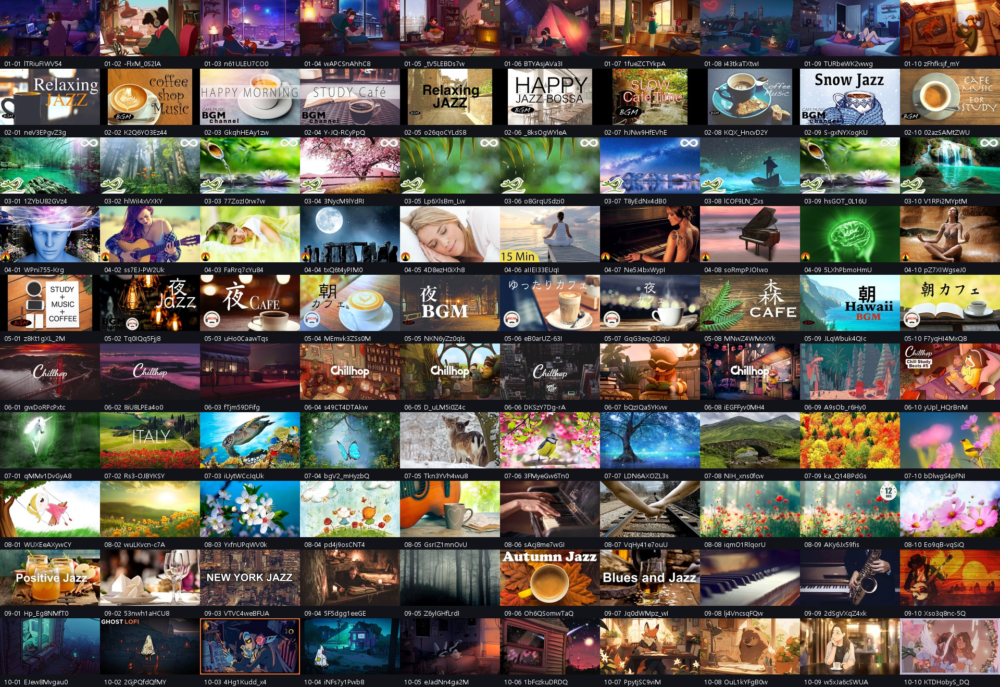
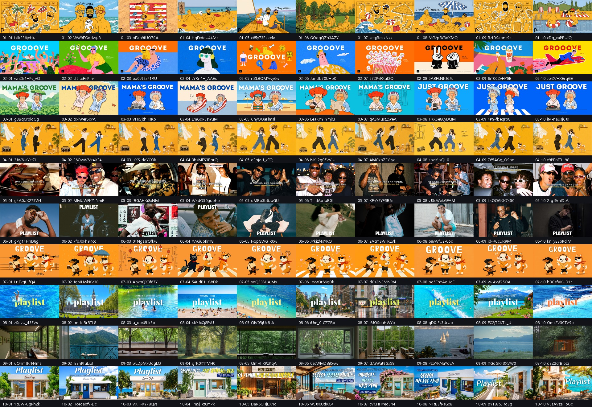

쓰는 법끼워넣기
2일차 진단의 ★표입니다. 3분이면 됩니다.
- 아래에서 내 컨셉과 가장 가까운 판을 하나 고릅니다
- 그 그림을 크게 띄웁니다. 그림을 눌러 확대하시면 됩니다
- 그 옆에 내 썸네일을 나란히 띄웁니다. 창을 둘로 나눠 놓으면 편합니다
- 3초만 보고 눈을 감았다 뜹니다. 내 것이 먼저 보이면 합격입니다
- 어디 있는지 찾아야 하면 불합격입니다. 다시 만드세요
합격·불합격 화면을 사진으로 남겨 두세요. 6일차에 다시 씁니다.
그때 내 썸네일들을 한 줄로 세워 보는데, 오늘 사진이 있으면 얼마나 달라졌는지가 눈에 보입니다.
따라 그리면 안 되는 것이 있습니다.
특정 채널의 캐릭터·로고·그 채널만의 고유한 구도는 그대로 만들지 마세요.
가져오는 건 구도·조명·색·감정까지입니다. 그리고 곡은 반드시 내가 만든 AI 생성곡입니다.
1전체 100장 — 여기부터 보세요
대형 채널 10곳의 인기 영상을 한 판에 모은 것입니다. 눈이 어디에 먼저 가는지 보세요.

창작곡 플리 대형 채널 10곳 · 인기 영상 100장 — 눌러서 크게 보세요
여기서 반복되는 것이 보이실 겁니다.
주인공이 하나고, 시간대가 분명하고, 따뜻한 빛과 차가운 빛이 같이 있습니다.
글자가 아예 없는 것도 많습니다. 그림만으로 무슨 영상인지 알게 만드는 것이 이 판의 공통점입니다.
2국내 3장르 100장
국내에서 돌고 있는 판입니다. 한국어 글자가 어떻게 들어가는지 보시면 6일차에 도움이 됩니다.

국내 3장르 · 100장 — 눌러서 크게 보세요
3채널 하나씩 — 내 컨셉과 가까운 판을 고르세요
한 채널의 인기 영상 10장씩입니다. 한 채널 안에서 얼마나 통일돼 있는지가 보입니다.
이게 6일차에 배우는 「한 채널로 보이게 만들기」의 실물입니다.
4내 것을 어떻게 줄여 보나
폰 목록에서 보이는 크기로 줄여 보는 것이 2일차의 두 번째 확인법입니다.
- 윈도우 — 내 썸네일 파일을 그림판으로 엽니다.
위쪽 [크기 조정]을 누르고 [픽셀]을 고른 뒤, 가로에 170을 넣습니다.
「가로 세로 비율 유지」에 체크가 되어 있으면 세로는 알아서 맞춰집니다
- 맥 — 파일을 두 번 눌러 미리보기로 열고, 위 메뉴에서 [도구] → [크기 조정],
폭에 170을 넣습니다
- 줄인 그림을 보고 1초 안에 주인공이 뭔지 알아보면 합격입니다
더 쉬운 방법도 있습니다. 내 유튜브 스튜디오에서 「콘텐츠」 목록을 여세요.
거기 뜨는 작은 그림이 마침 폰에서 보이는 크기와 비슷합니다.
줄이는 게 번거로우시면 그 화면으로 보셔도 됩니다.